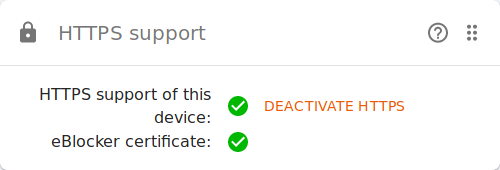

eBlocker Help > FAQs > HTTPS function (SSL/HTTPS)
For eBlocker Pro and eBlocker Family customers.
Open setup.eblocker.com in your browser to display the eBlocker Dashboard. Alternatively, you can go to the eblocker.box page to access the dashboard.
On the dashboard you will find an HTTPS card. This shows whether the eBlocker certificate has been stored correctly. The verification may take a few seconds. If both points on the card are green, the eBlocker has identified the HTTPS certificate.

After a successful verification, you should see the eBlocker icon in the upper right corner of your browser on an HTTPS web page.
If the HTTPS card is not on the dashboard, check the upper right corner of the dashboard and activate the HTTPS card.
For eBlocker Base customers.
eBlocker Base can only display the eBlocker icon on HTTP pages.
All features of your eBlocker Base are still active; only the icon is missing.